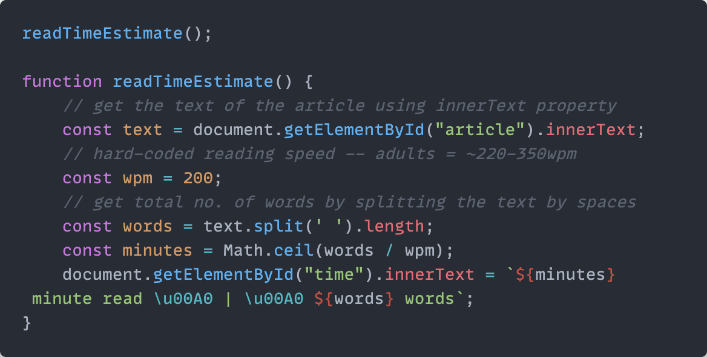

• 30/04/22
In the interest of learning new things, I decided to work on implementing a reading time estimate to my notes.
After some expertly executed and strenuous google searching, I found a javascript snippet on the first page of results that does just that and modified it slightly, adding comments that might be helpful for future reference:

Also, since the total word count was already stored in a variable, I decided to surface that number and have it exist alongside the reading time estimate1. Might as well.
I'm interested in experimenting with more javascript. How I understand it as of right now is that it is an easy way of embedding functions into websites and making them more dynamic/interactive.
Small implementation note: I stored the .js file in a separate folder, and used <script></script> to call them in the html files. This means I could probably have a bunch of separate .js files for each function I want to use, and call them when needed... very useful
1. I have since removed this word count because it serves no real purpose other than taking up space, or revealing how bad I am at long-form content (re: my inability to produce anything meaningful in that space). ↩︎
⚛︎ return to notes ⁖ return to main